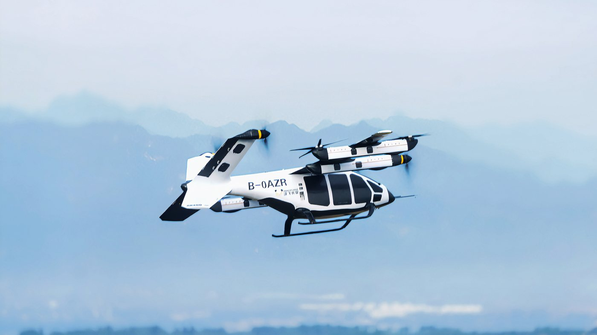
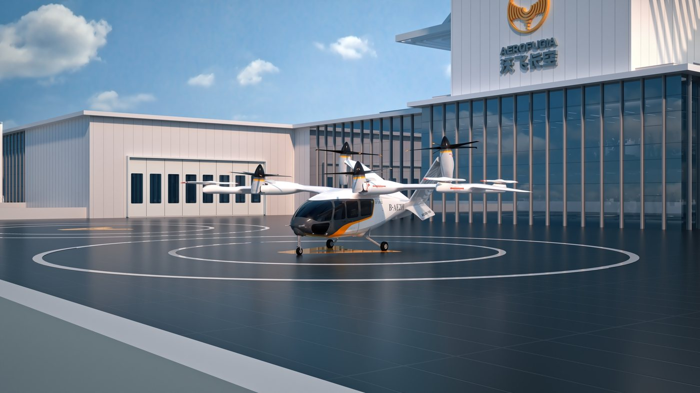
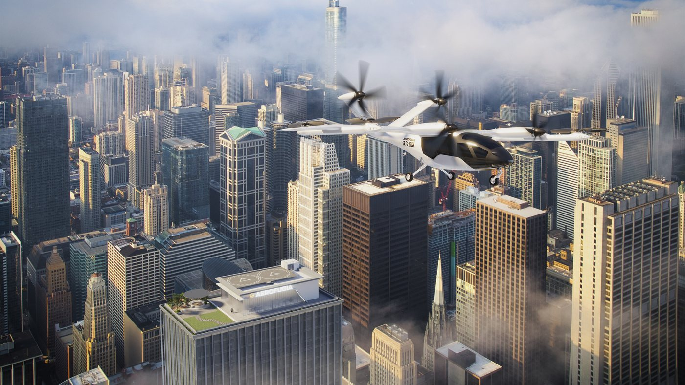

执行摘要Executive summaryWhat the evidence supports — and what it does not
- AE200-100 已进入 CAAC 型号合格证审定的第四阶段，但截至 2026 年 11 月 24 日没有公开的 TC 或 PC 颁证记录。企业口径为“2026—2027 年完成取证”，2026 年下半年媒体多表述为“预计 2027 年”。因此本文把它定义为“全球第一梯队的取证冲刺者”，而不是“已取证、可载客的商业产品”。[1][7] AE200-100 is in Stage 4 of CAAC type certification, with no public TC or PC issuance as of 24 November 2026. The company targets 2026–2027; reporting since mid-2026 mostly says 2027. It is a front-runner in certification, not yet a certificated, passenger-carrying product.
- “八轴内四倾转”是一个工程折中，而不是效率最优解。四个内侧旋翼在垂直起降与巡航之间倾转，四个外侧旋翼在巡航段顺桨；好处是保留独立升力冗余、降低过渡段风险，代价是巡航时携带不产生升力的旋翼与短舱重量。它更接近“安全优先的部分倾转”，而非 Joby 式全倾转。 The eight-axis, four-tilt layout is a compromise, not an efficiency optimum. Four inboard rotors tilt; four outboard rotors feather in cruise. It preserves independent lift redundancy and reduces transition risk, at the cost of carrying non-lifting rotors and nacelles.
- 冗余账本是它最强的工程叙事：八套双余度分布式电驱、四组相互独立的电池包、DAL-B 级电池系统（电芯失效率 10⁻⁸—10⁻⁹）、10⁻⁸/FH 的航电平台指标、20G 坠撞模组、整机水上漂浮设计。但这些是分系统指标；整机灾难性失效概率目标、过渡走廊边界、倾转机构寿命均未公开。 Its strongest engineering story is redundancy: eight dual-redundant drives, four independent packs, DAL-B batteries (10⁻⁸–10⁻⁹ cell failure), 10⁻⁸/FH avionics, 20G crash-tolerant modules and flotation. Yet these are subsystem figures; whole-aircraft catastrophic targets, transition corridors and tilt-actuator life remain undisclosed.
- 技术可行性必须分层判断：构型与过渡已“演示可行”，动力与电池已“工程验证”，量产一致性与运行经济性仍“未证明”。用“能飞”推导“能作为交通工具运营”，是这类案例最常见的逻辑跳跃。 Feasibility must be layered: configuration and transition are demonstrated; powertrain and battery are engineering-verified; production consistency and operating economics are unproven. “It flies” does not imply “it transports”.
- 最先成立的是低空文旅与机场接驳，不是城市通勤。200 km 航程与 230 km/h 巡航在“点到点、固定航线、可预期客流”的场景中才有意义；城市通勤受起降点密度、噪声、票价和空域审批四重约束，短期内不具备替代地面交通的条件。 Tourism and airport transfers come first, not commuting. 200 km and 230 km/h only pay off on fixed, point-to-point routes with predictable demand; urban commuting faces vertiport density, noise, fare and airspace constraints.
- 千架订单不是千架收入。公开可查的订单由意向采购、租赁公司框架协议与少量确认订单构成；按 1,500 万元级单机价格、每天 6 班、每年 250 天测算，座公里成本约 6—9 元，显著高于高铁与网约车，需要文旅溢价、机场接驳时间价值或政策补贴才能闭环。 A thousand commitments are not a thousand deliveries. Public orders mix intentions, leasing frameworks and a few firm contracts. At a ~¥15m aircraft price, six flights a day and 250 days a year, seat-kilometre cost is roughly ¥6–9 — well above rail or ride-hailing, requiring tourism premiums, time savings or subsidies.
数字口径说明：2022 年为 TC 受理而非颁证；2025 年为下线而非交付；1,000+ 为企业公开口径的“千余架”，其中包含意向订单与租赁合作；2027 年为媒体引述的取证目标。四项均不可直接换算为收入或运力。Note: 2022 is TC acceptance, not issuance; 2025 is roll-out, not delivery; 1,000+ is the company’s “over a thousand” figure including intentions and leasing agreements; 2027 is a reported target, not a commitment.
AE200 是中国最接近“可商业载客的倾转旋翼 eVTOL”的产品之一，工程成熟度扎实；但它真正的门槛不在飞起来，而在 2027 年前后能否同时闭环适航、产能、单位经济与运行体系这四本账。AE200 is one of China’s closest candidates for a commercially carryable tilt-rotor eVTOL, with solid engineering maturity. Its real gate is not flight but whether certification, production, unit economics and operations can close together around 2027.
研究设计与证据边界Research design and evidence boundaryEvidence grading before narrative
本文不是产品宣传册，也不是投资建议。它试图回答一个更窄的问题：在公开证据允许的范围内，AE200 的技术、场景与市场判断，各自能推到多远？This is neither a brochure nor investment advice. It asks a narrower question: within the limits of public evidence, how far can claims about AE200’s technology, scenarios and market be pushed?
研究对象限定为沃飞长空 AE200 系列，重点是其首个型别 AE200-100；时间范围为 2016 年法人实体成立至 2026 年 11 月 24 日；证据类型包括企业官网与官方图片、中国民航局文件、地方政府与央媒报道、券商研报、行业媒体、适航标准与竞品公开资料。全文采用“问题—证据—判断—反例—限制”的结构，而不是按企业叙事顺序展开。The object is the AE200 series, focused on its first variant, AE200-100, from the 2016 legal entity to 24 November 2026. Sources include official pages and imagery, CAAC documents, state and local media, broker research, industry press, airworthiness standards and competitor disclosures.
最重要的边界有三条。第一，企业披露证明“企业这样说过或做过”，不证明“指标已经第三方验证”；第二，演示飞行证明“在该条件下存在可行解”，不证明全寿命、全环境、全故障空间可用；第三，订单公告证明“存在采购安排”，不证明“已付款、已交付、可确认收入”。本文所有定量推算都标明假设，不冒充官方数据。Three boundaries matter. Company disclosure proves what the company said or showed, not third-party validation. A demonstration proves a feasible solution under those conditions, not availability across life, environment and failure space. An order announcement proves an arrangement, not payment, delivery or recognisable revenue.
| 来源类别Class | 代表来源Examples | 能证明什么What it establishes | 不能证明什么What it cannot |
|---|---|---|---|
| 企业官方Official | aerofugia.com 产品页、新闻、官方图片Product pages, news, imagery | 设计参数、项目节点、企业承诺Design targets, milestones, commitments | 第三方验证、实际运营表现Independent validation, field performance |
| 监管文件Regulatory | CAAC 专用条件、CCAR-21/135、SC-VTOLCAAC special conditions, CCAR, SC-VTOL | 审定基础、安全目标、运行资质Certification basis, safety objectives, operating approvals | 产品性能、商业成败Performance, commercial outcome |
| 主流媒体Press | 四川在线、澎湃、上证报、新华财经Regional and financial press | 时间、地点、订单与融资的交叉核验Triangulation of dates, places, orders, funding | 技术细节的精确性Precision of technical detail |
| 券商与行业Research | 华创证券低空经济周报、行业数据库Broker low-altitude reports, databases | 资本、产能、竞争格局的结构化信息Capital, capacity, competitive structure | 单机性能、适航结论Aircraft performance, certification findings |
| 标准与论文Standards | ISO 26262/21448、DO-311A、GB 38031ISO, DO, GB standards | 安全机理、符合性方法与评价框架Safety mechanisms, compliance methods | 某一具体型号的符合性Compliance of a specific type |
| 本文估算Estimates | 能量、成本、敏感性模型Energy, cost and sensitivity models | 数量级判断与情景边界Order-of-magnitude bounds and scenarios | 官方规格、财务预测Official specs, financial forecasts |
三个必须先拆开的概念Three distinctions that must be kept apart
型号 ≠ 型别Series ≠ variant
AE200 是一个系列名称，AE200-100 是首个取证型别，未来还有文旅、医疗等型别。系列参数（3—6 座）不能直接当作 AE200-100 的构型。AE200 is a series; AE200-100 is the first certification variant. Series parameters cannot be read as the variant’s configuration.
意向 ≠ 确认 ≠ 交付Intent ≠ firm ≠ delivery
“千余架”混合了意向采购、租赁框架与少量确认订单。只有披露付款条件、交付窗口与违约条款的部分，才接近可确认收入。The “thousand-plus” figure mixes intentions, leasing frameworks and a few firm orders. Only payment terms and delivery windows approach recognisable revenue.
取证 ≠ 交付 ≠ 运营Certification ≠ delivery ≠ operations
TC 证明型号设计符合适航要求；PC 证明批产一致性；AC 与 OC 才让具体一架飞机、一条航线合法载客。三者之间通常以年计。TC approves the design; PC approves production consistency; AC and OC make a specific aircraft and route legal. Years can separate them.
“率先”是相对命题“First” is relative
“国内首个、全球第二”完成全包线过渡，成立的前提是限定在有人驾驶、全尺寸、全重量、倾转构型这一组条件下；换一组条件，排序会变。“First in China, second globally” holds only under the stated conditions: manned, full-scale, full-weight, tilt-rotor.
公司与项目路径Company and programme pathA Geely-backed OEM betting on the hardest configuration
理解 AE200，先要理解沃飞长空不是一家从零开始的创业公司，而是“无人机技术资产 + 汽车工业体系 + 地方低空经济政策”三者拼接的产物。To understand AE200, start with the fact that Volant is not a from-scratch startup: it is a splice of drone technology, automotive industrial discipline and local low-altitude policy.
沃飞长空（AEROFUGIA）品牌于 2020 年 9 月由傲势科技与吉利太力飞车合并组建，法人实体可追溯至 2016 年；2026 年 3 月完成股份制改造，成为“四川沃飞长空科技股份有限公司”。控股股东为湖北吉利太力飞车有限公司，持股 40.02%，实际控制人为李书福；CEO 兼首席科学家郭亮来自傲势，董事长为徐志豪。[15][16] 这解释了它的两个特征：一方面继承了吉利的供应链、制造与质量管理体系；另一方面保留了无人机企业的快速迭代文化。The AEROFUGIA brand was formed in September 2020 by merging Aerofugia’s drone business with Geely’s Terrafugia team; the legal entity dates to 2016 and became a joint-stock company in March 2026. Geely’s Hubei Terrafugia holds 40.02%; Li Shufu is the ultimate controller; founder Guo Liang serves as CEO and chief scientist.
资本节奏与取证节奏高度耦合。2025 年 11 月完成 C 轮数亿元融资，投资方包括杭实集团、沙特阿美旗下 Prosperity7 与松禾资本；2026 年 2 月完成近 10 亿元 D 轮，由中信建投领投，资金明确用于“AE200 系列最终适航取证冲刺、全球总部基地投产与商业模式构建”。2026 年 4 月，科创板上市辅导备案；胡润《2026 全球独角兽榜》给出 120 亿元估值。[15][17] 换句话说，它把“取证”本身当作下一轮融资与 IPO 的核心叙事，这也意味着延期会直接转化为资本压力。Capital and certification are tightly coupled: a C round in November 2025, a roughly ¥1bn D round in February 2026 explicitly for certification and plant ramp-up, a STAR Market coaching filing in April 2026, and a ¥12bn third-party valuation. Certification is the core of the next financing story — which makes delay a capital problem, not only an engineering one.
图 1 项目路径。时间节点来自企业官网与主流媒体；2027 年为媒体引述的目标，不是已承诺的颁证日期。Figure 1. Programme path. Dates from official and press sources; 2027 is a reported target, not a committed issuance date.
制造端的关键节点是成都未来科技城的全球总部基地：2024 年 12 月开工，2026 年 3 月主体完工，计划 2026 年下半年投产。企业口径为“初期年产能数十架，后续逐步提升至数百架”。[6] 对一款尚未取证的机型而言，先建产能是一种“以产能锁定客户与地方资源”的策略，但它同时制造了折旧压力：如果 2027 年取证滑到 2028 年，厂房与产线将先于收入存在。The Chengdu Future Science City headquarters and plant broke ground in December 2024, topped out in March 2026 and targets production in the second half of 2026, with initial capacity in the tens and later hundreds. Building capacity before certification locks in customers and local support, but also front-loads depreciation if certification slips.
| 时间Date | 客户Customer | 数量Units | 性质Nature |
|---|---|---|---|
| 2023-07 | 华龙航空Sino Jet / Hualong | 100 | 采购协议（首批）Purchase agreement |
| 2024-11 | 工银金租ICBC Leasing | 120 | 意向采购Letter of intent |
| 2025-09 | 川发租赁Chuanfa Leasing | 200 | 意向采购（含零部件）Intent, incl. spares |
| 2025-11 | 华龙航空Hualong | 50 | 确认性订单Firm order |
| 2026-01 | 中航租赁、苏银金租AVIC Leasing, Suyin Leasing | 300 | 采购订单Purchase orders |
| 2026-07 | 上海啸翔通航Shanghai Xiaoxiang | — | 增购协议Additional purchase |
数据来源：企业官网、上证报、新华财经、四川在线等，见参考文献 [8][18][19][20]。表内数量为公开披露口径，未披露定金、付款节奏、交付窗口与违约条款；“千余架”不等于表内加总。Sources: company site, Shanghai Securities News, Xinhua Finance, Sichuan Online. Deposits, payment schedules, delivery windows and penalties are undisclosed; the “thousand-plus” figure is not the sum of this table.
按公开信息加总，可核对的订单约 720 架：华龙 100 架（其中 50 架后确认为正式订单）、工银金租 120 架（意向）、川发租赁 200 架（意向）、中航租赁与苏银金租 300 架（战略协议中的采购订单，未披露拆分与定金）。真正具备较强约束力的只有华龙 50 架——这就是“千余架”与“可确认收入”之间的差距。[8][19][20]Summing public disclosures gives about 720 units: Hualong 100 (of which 50 later firmed), ICBC Leasing 120 (intent), Chuanfa 200 (intent), AVIC and Suyin Leasing 300 (purchase orders inside strategic agreements, split and deposits undisclosed). Only Hualong’s 50 are strongly binding — the gap between “a thousand-plus” and recognisable revenue.
2025 年 5 月获得的 CCAR-135 部运行合格证，由沃飞旗下通航运营主体持有，初期以直升机执飞短途空中游览与不定期载客，并不等于 AE200 已获准商业载客。它的真实价值是：提前跑通航线申请、旅客服务、维修与安全管理体系，等 eVTOL 取证后可以更快切换机型。[5]The CCAR-135 certificate obtained in May 2025 sits with Volant’s general-aviation operating entity and initially covers helicopter sightseeing and non-scheduled passenger flights — not AE200 passenger operations. Its value is to pre-build route approvals, passenger handling, maintenance and safety management before the eVTOL is certificated.
型号与产品定义Product definitionAn aircraft, not a roadable flying car
中文舆论习惯把 AE200 叫“飞行汽车”，但它的产品定义是轻型商用 eVTOL：不能上路行驶，也不需要跑道。这个差别决定了它的监管路径、成本结构与场景边界。Chinese coverage calls AE200 a “flying car”, but it is a light commercial eVTOL: not roadable, and runway-independent. That difference determines its regulation, cost structure and addressable scenarios.
AE200 是一个系列型号，官方定义是“3—6 座级纯电动有人驾驶载人 eVTOL”，全系列设计参数为 200 km 航程、230 km/h 巡航速度，机身长 9.9 m、翼展 15 m、机高 4.4 m。AE200-100 是首个取证型别，标准客舱为 1 名驾驶员 + 4 名乘客，主要用于 A 点到 B 点的低空观光与低空出行；后续规划型别覆盖文旅与医疗救援。[1] 2026 年 7 月，沃飞发布面向文旅的 6 座优化样机，显示首批应用场景正进一步向“低空文旅”收敛。[39] 需要提醒的是，2024 年公开报道的参数为最大起飞重量 2,500 kg、任务巡航 248 km/h、最大平飞 320 km/h、升限 1,000 m AGL / 3,000 m MSL，这些数字与官网的“230 km/h 巡航”并不冲突——前者是任务剖面，后者是系列设计值——但混用时会造成误读。[21]AE200 is a series defined as a 3–6 seat, all-electric, piloted eVTOL with 200 km range and 230 km/h cruise, measuring 9.9 m long, 15 m span and 4.4 m high. AE200-100 is the first certification variant, typically one pilot and four passengers, aimed at sightseeing and point-to-point travel. Reported 2024 figures — 2,500 kg MTOW, 248 km/h mission cruise, 320 km/h maximum, 1,000 m AGL ceiling — describe a mission profile rather than contradicting the series design value.

| 项目Item | 公开值Reported value | 证据级别Evidence | 备注Note |
|---|---|---|---|
| 最大起飞重量MTOW | 2,500 kg | 媒体Press | 2024 年试飞通稿口径2024 flight-release figure |
| 最大商载Payload | 500 kg | 行业Industry | 未见企业正式确认Not officially confirmed |
| 航程Range | 200 km | 官方Official | 设计值，非满载实测Design value, not full-load tested |
| 巡航速度Cruise | 230 km/h（任务 248） | 官方Official | 系列值 / 任务剖面Series / mission |
| 最大平飞速度Vmax | 320 km/h | 媒体Press | 2024 年通稿2024 release |
| 升限Ceiling | 1,000 m AGL / 3,000 m MSL | 媒体Press | 城市低空运行足够Sufficient for urban low-altitude ops |
| 座位Seats | 3—6 座（标准 1+4）3–6 (standard 1+4) | 官方Official | 系列与型别口径不同Series vs variant |
| 动力架构Propulsion | 8 轴、内 4 倾转、8 套双余度电驱8 axes, 4 inboard tilt, 8 dual-redundant drives | 官方Official | 单机功率未公开Unit power undisclosed |
| 电池Battery | 4 组独立包、半固态电芯4 independent packs, semi-solid cells | 官方Official | 总容量 kWh 未公开Total kWh undisclosed |
| 充电Recharge | 约 20 分钟（800—1000 V 直流）~20 min at 800–1000 V DC | 媒体Press | 依赖专用储能充电站Requires dedicated charger |
| 噪声Noise | 地面 45 dB(A)@300 m；舱内 ≤60 dB(A)45 dB(A) at 300 m; ≤60 dB(A) cabin | 企业测试Company test | 非 CAAC 噪声审定结论Not a CAAC noise finding |
“官方”指企业官网或官方发布会；“媒体”指主流媒体引述企业通稿；“行业”指第三方整理，未见企业确认；“企业测试”指企业自测口径。所有参数以 CAAC 最终批准的型号数据表为准。“Official” = company site or launch event; “Press” = company release quoted by media; “Industry” = third-party compilation; “Company test” = self-reported. The CAAC-approved type data sheet prevails.
为什么不做“能开的飞行汽车”Why not a roadable flying car
陆空两栖产品要同时满足道路碰撞法规与航空适航要求，重量、结构与认证成本会急剧上升；而 AE200 选择的是“纯航空器 + 垂直起降场”的路线，把地面段交给汽车与轨道交通。这个选择牺牲了“门到门”的叙事，却换来了更清晰的适航边界：它只需要回答航空器的问题。对运营商而言，这意味着起降点必须固定、地面接驳必须另行解决——这正是后文场景分析的核心约束。A roadable vehicle must satisfy both crash regulations and airworthiness, driving up mass, structure and certification cost. AE200 chooses a pure aircraft plus vertiports, leaving the ground leg to cars and rail. That sacrifices door-to-door storytelling but clarifies the certification boundary — at the price of fixed vertiports and a separate ground connection.
系统架构与关键技术System architecture and key technologiesRedundancy is the product
AE200 的技术叙事不是“飞得快”，而是“坏得起”：八个轴、八套电驱、四个电池包、三套飞控通道，共同把“单点失效”转化为“可继续飞行并着陆”。这套冗余哲学决定了它的重量、成本与维护方式。AE200’s story is not speed but survivability: eight axes, eight drives, four packs and redundant flight-control channels turn single failures into continued flight and landing. That philosophy dictates mass, cost and maintenance.
图 3 按公开信息重构的系统架构。虚线框之外的运行层与机载硬件同等重要；未公开的控制拓扑、供应商与安全机制不在图中臆测。Figure 3. Architecture reconstructed from public information. The operational layer matters as much as airborne hardware; undisclosed topology and suppliers are not invented.
4.1 “八轴内四倾转”：把过渡风险拆成两半4.1 Eight axes, four tilting: splitting transition risk
倾转旋翼的核心难题是过渡段：旋翼从垂直升力模式转向水平推力模式时，机翼尚未建立足够升力，飞控必须在很小的速度—姿态窗口内完成配平与功率分配。全倾转方案（如 Joby S4）把所有旋翼都置于倾转短舱，巡航效率最高，但过渡段一旦出错，可用升力会同时减少。AE200 的做法是只让内侧四个轴倾转，外侧四个轴保持固定升力；巡航时外侧旋翼顺桨减阻。[2]The hard part of a tilt-rotor is transition: as rotors rotate from lift to thrust, the wing has not yet built enough lift, so control must rebalance within a narrow speed–attitude window. Full-tilt designs maximise cruise efficiency but lose lift together if transition goes wrong. AE200 tilts only the four inboard axes and keeps four outboard lift axes fixed, feathering them in cruise.
这个折中有两笔账。收益端：外层四个升力轴在过渡段提供独立于倾转机构的升力，即使倾转机构卡阻或内侧动力失效，仍保留可控下降能力；同时，固定升力轴的桨盘可以布置得更高、更靠外，降低地面人员与设备被桨叶击中的概率。代价端：巡航时四个不产生升力的旋翼与短舱成为“死重”和阻力源，航程与速度的上限低于全倾转方案；此外，八个轴意味着八套电驱、八套冷却与更多线束，维护复杂度上升。The trade has two sides. On the benefit side, the four outboard lift axes provide lift independent of the tilt mechanism, preserving a controlled descent if a tilt actuator jams or inboard power fails; their higher, wider placement also reduces ground-contact risk. On the cost side, four non-lifting rotors and nacelles become dead weight and drag in cruise, capping range and speed below full-tilt designs, while eight axes multiply drives, cooling and harness complexity.
从公开影像看，AE200 采用上单翼、四短舱、可收放前三点起落架；旋翼分三层排布并侧倾安装。这种布局对地面安全友好，但对结构重量与气动干扰不利——短舱与机翼之间的干扰、倾转过程中的非定常下洗，都需要风洞与带动力试验来标定。企业公开的信息是“完成全机带动力风洞试验与全尺寸螺旋桨跑车风洞试验”，但没有公开干扰阻力增量、桨盘载荷与功率载荷等关键参数。[2]Public imagery shows a high wing, four nacelles and retractable tricycle gear, with three-layer canted rotors. That is friendly to ground safety but demanding structurally and aerodynamically: nacelle–wing interference and unsteady downwash during tilt require powered wind-tunnel work. The company reports powered full-aircraft and full-scale propeller tunnel tests but discloses no interference drag, disk loading or power loading.
4.2 动力与倾转机构4.2 Propulsion and tilt mechanism
AE200 采用八套“双余度”分布式电驱：每套包含冗余绕组、冗余控制器与冗余散热，官方表述为单台失效、甚至对角两台同时失效仍可安全着陆。2026 年 3 月发布的“峨眉山”航空电动发动机由沃飞与卧龙电驱合资的浙江龙飞电驱研制，主打高功率密度、倾转工况适配与多通道余度；媒体披露单套峰值功率超过 200 kW、扭矩超过 1,300 N·m，但该数字未出现在企业正式规格表中。[9][22]AE200 uses eight dual-redundant distributed drives with redundant windings, controllers and cooling; the company says it can land safely after one unit, or even two diagonal units, fail. The “Emeishan” engine, launched in March 2026 by the Longfei Drive joint venture with Wolong, targets high power density, tilt-duty suitability and multi-channel redundancy. Media cite over 200 kW peak and 1,300 N·m per unit, though this is absent from formal specifications.
倾转机构是这类构型最容易被低估的部件。它要在全寿命内完成数千次 90° 往返，承受旋翼推力、陀螺力矩、阵风载荷与热循环，还要在卡阻时被飞控识别并隔离。企业公开了“倾转机构专项振动试验”和铁鸟台上的功率级联试，但没有公开作动器型式（电动/液压）、余度数、卡阻检测逻辑与寿命指标。对于适航审定而言，这些恰好是专用条件中最难编写的部分。[23]The tilt mechanism is the most under-appreciated part: thousands of 90° cycles under thrust, gyroscopic moment, gust and thermal loads, plus jam detection and isolation. Vibration testing and iron-bird power-level integration are reported, but actuator type, redundancy, jam-detection logic and life limits are not. These are precisely the hardest clauses in a special condition.
4.3 电池：四个包，四本安全账4.3 Battery: four packs, four safety ledgers
AE200 的动力电池“大渡河”采用半固态/固液混合电芯，电芯能量密度约 320 Wh/kg，支持 2C 充电、5C 放电、超过 1,000 次循环，20 分钟可完成一次完整补能；电池包采用 CTP 结构，成组率超过 80%，并配备对流脉冲热管理，兼顾 4C 充电散热与低温快速启动。[10][11] 电芯供应商为赣锋锂业，2025 年 12 月完成装机后的首阶段载人试飞。[10]The “Daduhe” pack uses semi-solid cells at about 320 Wh/kg, 2C charge, 5C discharge, over 1,000 cycles and a 20-minute full recharge. CTP packaging exceeds 80% integration; convection-pulse thermal management serves both 4C charging and cold starts. Ganfeng supplies the cells, installed before the first manned verification flights in December 2025.
真正值得研究的是它的失效设计：电池系统按 DAL-B 研制保证等级设计，电芯层级失效率标称 10⁻⁸—10⁻⁹；模组需在 20G 坠撞冲击下不发生重大结构损坏；多电芯热失控时，系统要在数十小时内把气体、碎片与液体限制在泄压通道内。四个电池包相互独立，每个包为多台电驱供电，单包失效后其余包仍能支撑安全飞行与着陆。[11][12]The failure design matters more: DAL-B assurance, cell failure rates quoted at 10⁻⁸–10⁻⁹, modules surviving 20G crash loads, and multi-cell thermal runaway contained within vent paths for tens of hours. Four independent packs each feed multiple drives, so one pack’s loss still supports safe flight and landing.
企业从未公开机载电池总容量（kWh）。网上流传的“264 kWh”是地面移动储能充电站，不是机上电池。没有总容量，就无法独立核算 200 km 航程在满载、逆风、备降与 20 分钟余油下的真实性——这正是本文第 5 节只能用“数量级估算”的原因。The company has never disclosed installed battery energy. The widely cited “264 kWh” refers to a ground charging station, not the aircraft. Without total kWh, the 200 km claim cannot be independently checked against full payload, headwind, diversion and 20-minute reserves — hence the order-of-magnitude approach in Section 5.
4.4 飞控、航电与 SVO14.4 Flight control, avionics and SVO1
飞控采用非相似（异构）多余度架构：多套不同实现的计算机同步运行、交叉校验，避免共因失效。AE200 的设计目标是 SVO1（简化飞行器操纵）级辅助驾驶——把垂直起降与巡航两套操纵逻辑统一起来，降低飞行员培训负担，并在异常时提供红/琥珀/白三级告警与辅助决策。企业称 SVO 可使运营本质安全性提升 1—2 个数量级。[24] 航电平台则宣称比传统综合航电减重 95%，可同时运行 20 余个驻留应用且互不干扰，可用性与完整性达到 10⁻⁸/FH。[14]Flight control uses dissimilar redundancy: multiple implementations run in parallel and cross-check to avoid common-mode failure. The design targets SVO1 simplification, unifying vertical and cruise control laws, reducing pilot workload and providing red/amber/white alerts and decision support. The avionics platform is claimed to be 95% lighter than conventional integrated avionics, hosting 20+ partitioned applications with 10⁻⁸/FH availability and integrity.
SVO1 是一个被营销语言包裹的技术选择。对运营商，它意味着更短的改装培训与更低的机组成本；对适航，它意味着必须证明“简化”没有把风险转移给飞行员——例如模式混淆、自动化依赖、异常下的接管时间。这些属于 SOTIF 与人为因素范畴，公开材料目前只到“功能描述”层级，没有场景清单与验证证据。SVO1 is a technical choice wrapped in marketing. For operators it means shorter conversion training and lower crew cost; for certification it means proving simplification does not shift risk to the pilot through mode confusion, automation dependence or takeover latency. That is SOTIF and human factors territory, and public material stops at functional description.
4.5 结构、材料与坠撞4.5 Structure, materials and crashworthiness
机体结构大量使用碳纤维增强复合材料，企业称占结构重量 80% 以上，采用“积木式”验证（试样—元件—部件—全机）。此外公开了两项与生存性直接相关的设计：基于全剖面的乘员坠撞保护，以及水上应急迫降与漂浮能力。对一款主要在城市与景区上空运行、且没有整机降落伞公开证据的机型而言，坠撞与水上迫降是最后一道被动安全屏障。[14][25]The airframe is largely carbon-fibre composite — over 80% of structural weight by the company’s account — validated through a building-block approach. Two survivability features are public: full-section occupant crash protection and emergency water ditching with flotation. For an aircraft operating over cities and scenic areas, with no public evidence of a whole-aircraft parachute, these are the last passive barriers.
复合材料的优势是比强度与可设计性，风险是缺陷与冲击损伤的不可见性。航空级复合材料结构需要超声、X 射线等无损检测与严格的工艺窗口；而 eVTOL 的高频起降、倾转载荷与电池热循环，会叠加出与传统通航飞机不同的疲劳谱。这部分公开信息几乎为零。Composites offer specific strength and design freedom, but hidden defects and impact damage are the risk. Aerospace composite structures demand ultrasonic and X-ray inspection plus tight process windows; eVTOL’s high-cycle take-offs, tilt loads and battery thermal cycling create a fatigue spectrum unlike conventional general aviation. Public data here is essentially nil.
4.6 技术成熟度（TRL）判断4.6 Technology readiness assessment
TRL 为本研究基于公开证据的判断，不是企业评级。判定依据：TRL 7 = 全尺寸系统在运行环境中演示；TRL 6 = 原型在相关环境中验证；TRL 4 = 实验室环境验证。运行体系因起降场、MRO、航线审批均未成形而偏低。TRL is this study’s judgement, not a company rating: 7 = full-scale system demonstrated in an operational environment; 6 = prototype validated in a relevant environment; 4 = lab validation. Operations scores low because vertiports, MRO and route approvals are not yet in place.
技术可行性：从“能过渡”到“能运输”Technical feasibility: from transition to transportAn energy ledger, not a flight demo
2024 年 6 月的全包线过渡证明了一件事：这架飞机在试飞条件下可以完成从垂直起飞到固定翼巡航再回到垂直着陆的完整循环。它没有证明的是：在满载、逆风、备降、极端温度与单点故障叠加时，能量与功率是否仍然够用。The June 2024 full-envelope transition proved the aircraft can complete the full cycle under test conditions. It did not prove energy and power margins under full payload, headwind, diversion, temperature extremes and single failures combined.
5.1 能量与功率：一笔只能用假设补全的账5.1 Energy and power: a ledger filled with assumptions
企业没有公开旋翼直径、桨盘面积、电池总容量与巡航升阻比，因此无法做“官方规格复核”。但可以用公开的 2,500 kg 起飞重量、200 km 航程与 230 km/h 巡航，建立数量级模型。下表所有输入均为假设，输出只用于判断“是否物理上说得通”，不构成产品性能结论。Rotor diameter, disk area, installed energy and cruise L/D are undisclosed, so official specifications cannot be re-derived. But the public 2,500 kg MTOW, 200 km range and 230 km/h cruise support an order-of-magnitude model. Every input below is an assumption; outputs test physical plausibility only.
| 量Quantity | 假设 / 公式Assumption / formula | 结果Result |
|---|---|---|
| 悬停功率Hover power | P = (mg)3/2 / √(2ρA) / FM；A≈45 m²，FM≈0.72Momentum theory; A≈45 m², FM≈0.72 | 480–560 kW |
| 巡航功率Cruise power | P = mg·V / (L/D·η)；L/D≈11–13，V=64 m/sL/D≈11–13 at 64 m/s | 150–185 kW |
| 200 km 任务能量Mission energy | 巡航 52 min + 起降/爬升 + 15% 余量52 min cruise + vertical phases + 15% reserve | 140–170 kWh |
| 电池质量Pack mass | 320 Wh/kg 电芯、成组率 80%320 Wh/kg cells, 80% integration | 550–660 kg |
| 电池质量占比Mass fraction | 电池质量 / 2,500 kgPack / MTOW | 22%–26% |
| 峰值放电倍率Peak C-rate | 起飞 600–700 kW / 155 kWh600–700 kW over ~155 kWh | 3.9–4.5C |
| 装机功率Installed power | 8 × >200 kW（媒体口径）8 × >200 kW (reported) | >1.6 MW |
| 能量强度Energy intensity | 155 kWh / (4 座 × 200 km)per seat-km, 4 passengers | ≈0.19 kWh/座·km |
模型校验：按 230 km/h 巡航、200 km 航程，纯巡航时间约 52 分钟；若电池为 155 kWh，则巡航段平均功率必须控制在 150 kW 量级，与 L/D≈11—13 的假设自洽。若实际 L/D 低于 9，200 km 航程在 500 kg 商载下将难以成立——这也是“200 km 是设计值而非满载实测”的原因。Sanity check: 200 km at 230 km/h is about 52 minutes of cruise; with 155 kWh, average cruise power must stay near 150 kW, consistent with L/D≈11–13. If actual L/D is below 9, 200 km with 500 kg payload becomes hard — hence “design value, not full-load demonstrated”.
这笔账揭示了三件事。第一，电池质量占比 22%—26% 是合理但偏紧的：它给结构与商载留下的余量不大，任何超重都会直接吃掉航程。第二，峰值放电倍率约 4C，正好落在企业宣称的 5C 放电能力之内，说明“电池能撑住起飞”在物理上成立，但会加速产热与老化。第三，装机功率 1.6 MW 是需求功率的 2.3 倍以上——这不是浪费，而是为了在“对角两台失效”后仍保留悬停能力所付出的重量代价。Three implications follow. A 22–26% battery mass fraction is plausible but tight: little margin for structural growth or payload, and any overweight directly cuts range. A ~4C peak sits inside the claimed 5C discharge capability, so take-off is physically credible but thermally and cyclically costly. And 1.6 MW installed against ~0.7 MW required — over 2.3× — is the weight price of retaining hover after two diagonal failures.
5.2 过渡走廊：最关键、也最不透明的一段5.2 The transition corridor: critical and opaque
过渡走廊可以理解为“速度—高度—姿态—功率”四维空间中的安全通道：速度太低，机翼没有升力；速度太高，旋翼进入不利来流；姿态变化过快，飞控来不及配平。全倾转飞机通常在 30—50 m/s 完成过渡，走廊宽度以秒计。AE200 由于保留四个固定升力轴，理论上可以把走廊切分为“升力轴保底 + 倾转轴渐进”的两段式过渡，降低对精确时序的依赖；但这也意味着过渡期间八个轴的气动干扰更复杂。The transition corridor is a safe channel in speed–altitude–attitude–power space: too slow and the wing cannot carry weight, too fast and rotor inflow degrades, too abrupt and control cannot trim. Full-tilt designs typically transition around 30–50 m/s within seconds. With four fixed lift axes, AE200 can in principle split transition into a lift-backed phase and a progressive tilt phase, reducing timing sensitivity — at the cost of more complex eight-rotor interference.
公开信息只告诉我们“完成了全包线过渡”，没有给出走廊边界、最小安全速度、单发失效后的过渡策略与最大过渡速率。对适航审定，这些是专用条件与飞行手册的核心内容；对运营商，它们决定了起降场周边必须预留多少净空与噪声缓冲区。因此，“完成过渡试飞”是工程里程碑，不是运行许可。Public information confirms the full-envelope transition but not corridor boundaries, minimum safe speed, one-engine-out transition strategy or maximum transition rate. These are core special-condition and flight-manual content, and they determine obstacle clearance and noise buffers around vertiports. A transition flight test is an engineering milestone, not an operating approval.
5.3 能力层级：把“可行”拆成四级5.3 Capability levels: splitting “feasible” into four
| 层级Level | 定义Definition | 公开证据Public evidence | 判定Assessment |
|---|---|---|---|
| L1 演示Demo | 完成垂直起降、过渡与巡航的完整循环Complete vertical–transition–cruise cycle | 2024-06 全尺寸全重量全包线试飞June 2024 full-scale flight | 已达成Achieved |
| L2 工程验证Qualified | 包线、故障、环境与寿命证据闭环Envelope, failure, environment and life evidence | 三鸟台、振动、热失控、有人驾驶试飞Rigs, vibration, thermal runaway, manned flights | 进行中In progress |
| L3 运输运行Transport ops | 在监管空域内重复载客并保持可用率Repeatable passenger ops with dispatch reliability | TC/PC/AC/OC 与运行数据均缺TC/PC/AC/OC and operating data missing | 未证明Not proven |
| L4 规模经济Scale economics | 单位成本低于替代交通方式Unit cost below alternatives | 无公开成本结构No public cost structure | 不成立Not met |
用这四级看，AE200 处在 L1 已达成、L2 进行中的位置。它与亿航 EH216-S 的差别不是“谁更先进”，而是产品路线不同：EH216-S 用多旋翼换取了更简单的构型与更早的取证，代价是 30 km 航程与 130 km/h 速度；AE200 用倾转构型换取 200 km 与 230 km/h，代价是更长的审定周期与更高的工程风险。两条路线没有绝对优劣，只有场景匹配。AE200 sits at L1 achieved, L2 in progress. Its difference from EHang’s EH216-S is not sophistication but route: the multirotor trades range and speed (30 km, 130 km/h) for a simpler configuration and earlier certification; the tilt-rotor trades certification time and engineering risk for 200 km and 230 km/h. Neither is universally superior — only scenario-fit differs.
安全、适航与 SOTIFSafety, airworthiness and SOTIFCertification is a process, not a badge
对载人 eVTOL，安全不是“多装几个备份”的加法，而是一套从危险识别到运行限制的闭环。AE200 的挑战在于：它同时是新材料、新构型、新动力与新运行概念，局方与企业必须一边审定一边写标准。For passenger eVTOL, safety is not additive redundancy but a closed loop from hazard identification to operating limits. AE200 is simultaneously new materials, new configuration, new propulsion and new operations; regulator and applicant must write standards while certifying.
6.1 监管路径：四张证，五道关6.1 The regulatory path: four certificates, five stages
AE200-100 走的是 CCAR-21-R4 第 21.17 条下的“特殊类别航空器”路径。由于现行规章没有为“多旋翼 + 固定翼”的倾转构型准备完整审定标准，民航西南局为其制定了专用条件 SC-21-006，参考 EASA SC-VTOL、CCAR-23/27 与相关电池标准，作为 G1 审定基础；这也是全国首个面向 5—6 座有人驾驶 eVTOL 的专用条件。[3][4][26]AE200-100 follows the special-class route under CCAR-21-R4 §21.17. With no complete standard for a multirotor-plus-wing tilt configuration, the Southwest Regional Administration issued special condition SC-21-006, drawing on EASA SC-VTOL, CCAR-23/27 and battery standards, as the G1 certification basis — China’s first for a 5–6 seat manned eVTOL.
| 证件Certificate | 作用Function | 状态Status | 关键节点Milestone |
|---|---|---|---|
| TC | 型号设计符合适航要求Design approval | 审定第四阶段TC Stage 4 | 2022-11 受理；G1、DAS、AEG、CP 已完成Accepted 2022-11; G1, DAS, AEG, CP done |
| PC | 批量生产一致性Production approval | 审定中In review | 2025-05 受理；2025-06 首次会议Accepted 2025-05; first meeting 2025-06 |
| AC | 单机适航Airworthiness certificate | 未开始Not started | 需 TC 与 PC 支撑Requires TC and PC |
| OC | 商业运行许可Operator certificate | 以直升机先行Helicopter first | CCAR-135 证由通航主体持有CCAR-135 held by GA entity |
需要强调，“第四阶段”不等于“临门一脚”。TC 审定通常分为概念设计、要求确定、符合性计划、符合性验证与最终批准五个阶段；第四阶段要完成大量地面试验、飞行试验与符合性文件审查，任何一项不符合都可能导致设计更改与重新验证。对倾转构型，最耗时的往往是过渡段飞行试验、单发/多发失效试验与电池热失控验证。企业口径“2026—2027 年”与媒体口径“2027 年”之间的差异，本身就反映了这种不确定性。[7]“Stage 4” is not the final step. TC work runs through concept, requirements, compliance planning, compliance verification and final approval; Stage 4 involves heavy ground and flight testing plus document review, and any finding can trigger redesign. For tilt-rotors, transition flight testing, engine-out testing and battery thermal-runaway validation tend to dominate. The gap between “2026–2027” and “2027” is itself the uncertainty.
6.2 安全目标：分系统很漂亮，整机仍缺一个数6.2 Safety objectives: strong subsystems, one missing aircraft-level number
公开材料给出的安全指标都停在分系统层级：电池系统 DAL-B、电芯失效率 10⁻⁸—10⁻⁹、航电平台 10⁻⁸/FH、20G 坠撞、多电芯热失控包容。这些数字放在汽车行业是“远超国标”，放在航空行业只是“进入门槛”。真正决定整机安全水平的是：整机灾难性失效概率目标是多少、如何分配到各系统、如何用独立性论证避免共因失效。SC-VTOL 对载人 VTOL 的灾难性失效目标通常在 10⁻⁹/FH 量级，但 AE200 专用条件的具体数值尚未公开检索到。[3][26]Public figures stop at subsystem level: DAL-B batteries, 10⁻⁸–10⁻⁹ cell failure, 10⁻⁸/FH avionics, 20G crash, thermal-runaway containment. Impressive against automotive standards, these are entry thresholds in aviation. What determines aircraft safety is the whole-aircraft catastrophic target, its allocation and the independence argument against common-mode failure. SC-VTOL-type targets are around 10⁻⁹/FH, but AE200’s specific value is not publicly retrievable.
还有一个结构性问题：电池系统按 DAL-B 设计，而 DAL-B 对应的定量目标通常比 DAL-A 低一个数量级。对于“电池热失控导致失去全部动力”这类灾难性后果，DAL-B 是否足够，取决于架构能否证明热失控不会跨包传播、且剩余包仍能支撑着陆。企业用“四包独立 + 独立泄压 + 热包容”回答这个问题，但缺乏公开的故障树与定量分析。There is also a structural question: DAL-B batteries normally carry a quantitative target an order of magnitude below DAL-A. For “thermal runaway removes all power” — a catastrophic outcome — DAL-B sufficiency depends on proving propagation is contained and remaining packs can land the aircraft. Four independent packs, dedicated vents and containment are the answer, but the fault tree and quantitative analysis are not public.
6.3 风险矩阵：从危险到证据6.3 Risk matrix: from hazard to evidence
| 风险域Domain | 可能危害Hazard | 缓解设计Mitigation | 公开证据Public evidence |
|---|---|---|---|
| 倾转机构Tilt | 卡阻、非指令倾转、过渡中断Jam, uncommanded tilt, aborted transition | 外四轴独立升力、故障隔离Independent outboard lift, isolation | 振动与铁鸟试验Vibration / rig tests |
| 电池Battery | 热失控、跨包传播、起火Thermal runaway, propagation, fire | 四包独立、泄压通道、热障Four packs, vents, barriers | 燃烧弹 / ARC / 模组试验Bullet / ARC / module tests |
| 过渡控制Transition | 升力不足、姿态失控Lift shortfall, loss of attitude | 两段式过渡、包线保护Two-phase transition, envelope protection | 走廊边界未公开Corridor undisclosed |
| 地面人员Ground crew | 桨叶撞击、下洗流Rotor strike, downwash | 高位旋翼、三层侧倾、隔离区High rotors, canted layers, exclusion | 设计描述Design description |
| 坠撞Crash | 乘员伤害、起火Occupant injury, fire | 全剖面坠撞保护、20G 模组Section crash protection, 20G modules | 设计描述Design description |
| 水上Ditching | 迫降后沉没Sinking after ditching | 漂浮设计Flotation | 设计描述Design description |
| 人为因素Human factors | 模式混淆、接管过晚Mode confusion, late takeover | SVO1、三级告警SVO1, tiered alerts | 无场景证据No scenario evidence |
6.4 SOTIF：没有故障，也会不安全6.4 SOTIF: unsafe without a failure
ISO 21448（SOTIF）关心的是“系统都正常工作，但功能或性能不足导致危险”。对 AE200，典型场景包括：低空阵风超出预期、起降场周边障碍物识别不足、飞行员对 SVO 模式边界理解错误、地面人员进入旋翼危险区、电池在低温下功率受限而告警不及时。这些风险不来自硬件失效，而来自“设计没有覆盖到的合理使用与可预见误用”。ISO 21448 addresses hazards arising when everything works but functionality or performance is insufficient: unexpected low-altitude gusts, obstacle detection gaps near vertiports, pilot misunderstanding of SVO boundaries, ground crew entering rotor zones, or cold-temperature power limits without timely alerts. These are not hardware failures but uncovered reasonable use and foreseeable misuse.
目前公开信息没有 AE200 的 SOTIF 专项工作、场景清单或验证方法。这不意味着企业没有做——适航审定本身就要求系统安全评估——而是意味着外部研究者无法判断其覆盖度。对一款计划在城市与景区上空载客的飞行器，SOTIF 的公开透明度会直接影响公众信任与保险定价。No AE200-specific SOTIF work, scenario list or validation method is public. That does not mean it is absent — certification mandates system safety assessment — but external observers cannot judge coverage. For an aircraft intended to carry passengers over cities and scenic areas, SOTIF transparency will affect public trust and insurance pricing.
6.5 与直升机的安全基准对比6.5 Benchmarking against helicopters
传统直升机的事故率大约在每 10 万飞行小时个位数到十余起，致命事故率约每 10 万小时 1 起量级；eVTOL 的适航目标是把灾难性失效压到 10⁻⁹/FH 量级，理论上比直升机低两到三个数量级。但“目标”与“实现”之间隔着运行经验：早期机队的事故率通常由人为因素、维护差错与运行环境决定，而不是设计指标。亿航 EH216-S 取证后交付量在 2026 年一季度骤降至 4 架，也说明“取证—交付—运营”之间的爬坡远比证书本身复杂。[27] 2025 年 9 月 16 日长春航展，两架小鹏汇天 eVTOL 因编队间距不足发生接触，一架着陆后起火，至少 1 人受伤；调查结论未见公开，但它提醒行业：演示飞行的编排风险，可能比技术故障更早触发公众与监管的负面反应。[40]Helicopter accident rates run from single digits to low teens per 100,000 flight hours, with fatal accidents around one per 100,000 hours; eVTOL certification targets catastrophic failure near 10⁻⁹/FH, two to three orders lower in theory. But targets are not field experience: early fleets are shaped by human factors, maintenance error and operating environment. EHang’s deliveries falling to four units in Q1 2026 shows how hard the certification-to-delivery-to-operations ramp is. At the Changchun airshow on 16 September 2025, two XPeng AeroHT eVTOLs touched during a formation display; one caught fire on landing and at least one person was injured. No investigation report is public, but it shows that display-choreography risk can trigger public and regulatory backlash earlier than technical failure.
更现实的比较是“同任务风险”：在景区观光、机场接驳这类 20—100 km 的短途任务中，直升机的风险主要来自低空障碍、天气与人为失误；eVTOL 把这些风险部分转移到电池、软件与地面基础设施。它未必更安全，只是把风险换了位置——而监管与保险必须重新定价这些新位置。A more realistic comparison is task-level risk. On 20–100 km sightseeing or airport transfers, helicopter risk concentrates in low-altitude obstacles, weather and human error; eVTOL shifts part of it to batteries, software and ground infrastructure. It may not be safer — it relocates risk, and regulation and insurance must reprice the new locations.
应用场景：技术可行、运营可行与市场可行是三件事Scenarios: technical, operational and market feasibility differWhere 200 km actually pays
200 km 航程是一个尴尬的数字：对城市内通勤太长，对省际出行太短。它真正适配的是“城市群内的点到点”——景区到景区、机场到市区、城市到卫星城。场景选错，再好的飞行器也只能做演示。200 km is an awkward number: too long for intra-city commuting, too short for inter-provincial travel. It fits point-to-point within city clusters — scenic site to scenic site, airport to downtown, city to satellite town. Choose the wrong scenario and even a good aircraft becomes a demonstrator.
| 场景Scenario | 技术适配Technical | 监管难度Regulatory | 支付意愿Willingness | 综合判断Verdict |
|---|---|---|---|---|
| 低空文旅 / 景区观光Tourism / sightseeing | 5 | 4 | 5 | 近期最现实Most viable now |
| 机场 / 高铁站接驳Airport / rail transfer | 5 | 3 | 4 | 可试点Pilot-ready |
| 城市群城际短途Intercity within cluster | 4 | 3 | 3 | 情境依赖Context-dependent |
| 应急医疗转运Emergency medical | 3 | 2 | 5 | 需专门构型Needs variant |
| 城市日常通勤Urban commuting | 2 | 1 | 2 | 短期不可行Not near-term |
| 物流货运Cargo | 2 | 3 | 2 | 应另做货机Cargo variant |
评分为本文判断，不是企业数据。技术适配考虑航程、载荷、起降条件与维护；监管难度分数越高表示越容易；支付意愿反映目标客群为时间或体验付费的能力。Scores are this study’s judgement. Technical fit covers range, payload, take-off conditions and maintenance; higher regulatory scores mean easier approval; willingness reflects the target segment’s ability to pay for time or experience.
7.1 低空文旅：第一个能算过账的场景7.1 Tourism: the first scenario that can balance
成都给出的样本最有说服力：熊猫基地到青城山约 20 分钟，天府五街到双流机场约 5 分钟；企业计划未来两年在成都都市圈布设 100 个以上起降点，单座票价目标“与豪华网约车相当”。[28] 文旅场景的优势在于：航线固定、客流可预测、乘客对价格不敏感、起降点可以建在景区外围，且监管可以采用“先观光、后通勤”的渐进路径。Chengdu is the clearest sample: about 20 minutes from the panda base to Qingcheng Mountain, about 5 minutes from Tianfu 5th Street to Shuangliu airport; the company plans 100+ vertiports in the metro area within two years and targets fares “comparable to premium ride-hailing”. Tourism offers fixed routes, predictable demand, price-insensitive passengers, peripheral vertiports and a gradual regulatory path from sightseeing to commuting.
但文旅的天花板也很清楚：它依赖“稀缺体验溢价”，而不是运输效率。一旦游客把“坐一次”变成“偶尔坐”，复购率就会下降；景区天气、客流季节性与单机日利用率会直接决定投资回收期。对运营商，文旅更像“航空版的高端游乐设施”，需要的是高可用率与低故障率，而不是 200 km 的航程。The ceiling is equally clear: tourism depends on scarcity premiums, not transport efficiency. Once “try once” replaces repeat use, repeat rates fall; weather, seasonality and daily utilisation determine payback. For operators it behaves like a premium amusement ride — availability and reliability matter more than 200 km range.

7.2 机场接驳：时间价值最高，但起降点最贵7.2 Airport transfer: highest time value, costliest vertiports
机场接驳是 eVTOL 最经典的商业假设：避开地面拥堵，把 45—60 分钟的车程压缩到 10—15 分钟。AE200 的 200 km 航程在这里是“过剩能力”，真正决定成败的是起降点能否建在航站楼附近、空域能否与民航进近程序隔离、以及单座价格能否落在商务旅客的报销范围内。天府机场到市区的 15 分钟航线，需要的是“机场侧垂直起降坪 + 市区屋顶/地面起降点 + 专用低空航线”三件套，任何一件缺失都会让时间优势被地面接驳吃掉。Airport transfer is the classic eVTOL case: bypass congestion and cut a 45–60 minute drive to 10–15 minutes. AE200’s 200 km is surplus here; success depends on vertiports near terminals, airspace segregated from airline approaches, and fares within corporate travel budgets. A 15-minute Tianfu airport route needs an airport-side pad, a city-side vertiport and a dedicated low-altitude corridor — missing any one erodes the time advantage.
经济性上，机场接驳的单座价格可以显著高于文旅（商务旅客的时间价值更高），但起降点的土地与建设成本也最高。这意味着它更适合“由机场集团或地方平台投资起降点、运营商轻资产执飞”的模式，而不是运营商自建基础设施。Economically, airport seats can price above tourism because business travellers value time more, but vertiport land and construction cost the most. That favours airport groups or local platforms owning infrastructure while operators run aircraft asset-light.
7.3 城际短途与应急医疗：需要不同的产品7.3 Intercity and medical: different products needed
城际短途（如成都—重庆、深圳—珠海）看起来最匹配 200 km，但它面对的是高铁的绝对优势：票价、准点率、运力与市区到市区的可达性。eVTOL 只有在“高铁站偏远、公路拥堵、时间价值极高”的走廊里才有机会，例如跨江、跨湾、山区。应急医疗则是另一个逻辑：它需要的是“舱内可放担架、可接监护设备、可在夜间与复杂气象下运行”，而不是六个真皮座椅；AE200 的医疗型别目前仍在规划阶段，尚未公开舱内构型与适航补充要求。[1]Intercity routes such as Chengdu–Chongqing or Shenzhen–Zhuhai look like a range match but compete with high-speed rail on fare, punctuality, capacity and city-centre access. eVTOL only wins in corridors where rail stations are remote, roads are congested and time value is extreme — river crossings, bays, mountains. Medical transport needs stretchers, monitors and night/all-weather capability, not six leather seats; the medical variant is still planned, with no public cabin or supplemental certification requirements.
7.4 城市通勤：短期不成立的四个理由7.4 Urban commuting: four reasons it does not work yet
- 起降点密度不足。城市通勤要求“步行 10 分钟到起降点”，而一座起降场的服务半径通常只有 3—5 km；在起降点达到数百个之前，门到门时间不会优于地铁。Vertiport density. Commuting needs a pad within a 10-minute walk; a vertiport serves only 3–5 km. Until hundreds exist, door-to-door time loses to metro.
- 噪声与社区接受度。企业宣称地面 45 dB(A)@300 m，但这是单次起降的测试口径；高频次起降的累积噪声、夜间运行与低频振动，会引发完全不同的社区反应。Noise and acceptance. The 45 dB(A) at 300 m claim is a single-event test; cumulative noise from frequent movements, night operations and low-frequency vibration triggers a different community response.
- 成本。第 8 节的测算显示座公里成本约 6—9 元，是网约车的 2—4 倍；没有补贴，通勤客群不会为“快 15 分钟”支付这个溢价。Cost. Section 8 estimates ¥6–9 per seat-km, 2–4× ride-hailing; without subsidy, commuters will not pay that for 15 minutes.
- 空域与运行复杂度。城市低空高频次、多运营商、多机型运行，需要 UOM、低空智联网与冲突探测的成熟；这套体系的建设进度慢于飞行器本身。Airspace complexity. High-frequency, multi-operator urban low-altitude traffic needs mature UOM, low-altitude networks and conflict detection — infrastructure that lags the aircraft.

AE200 的商业化顺序应当是：文旅（2027—2028）→ 机场接驳（2028—2029）→ 城际与应急（2029—2030）→ 城市通勤（2030 年以后，且取决于基础设施）。任何把“城市空中出租车”当作首发场景的商业计划，都需要重新检查其起降点、票价与空域假设。The commercial sequence should be tourism (2027–28), airport transfer (2028–29), intercity and medical (2029–30), then commuting after 2030 subject to infrastructure. Any plan launching as an urban air taxi should re-check vertiports, fares and airspace assumptions.
市场可行性：千架订单与每座公里成本Market feasibility: a thousand orders and a seat-kilometreCommitments are not revenue
eVTOL 的市场分析最容易犯两个错误：把宏观“低空经济万亿市场”乘一个份额，或者把意向订单当作已确认收入。本文改用自下而上的方式：一架飞机一年能飞多少班、每班能收多少钱、成本是多少。eVTOL market analysis makes two easy mistakes: multiplying a trillion-yuan macro market by a share, or treating intentions as revenue. This section works bottom-up: flights per aircraft per year, revenue per flight, and cost.
8.1 订单的质量8.1 The quality of the order book
“千余架”是沃飞对外最常引用的数字，但拆开看，它由三类构成：确认性订单（如华龙航空 50 架）、采购订单/框架协议（如中航租赁、苏银金租合计 300 架、华龙首批 100 架）、意向采购（如工银金租 120 架、川发租赁 200 架）。三类的法律约束力、付款节奏与交付条件完全不同。[8][18][19][20]“Over a thousand” comprises three tiers: firm orders (e.g., 50 from Hualong), purchase orders or frameworks (300 from AVIC and Suyin leasing; Hualong’s initial 100), and intentions (120 from ICBC Leasing, 200 from Chuanfa). Legal force, payment schedules and delivery conditions differ sharply.
租赁公司的大额订单尤其需要谨慎解读。金融租赁的目标是“资产配置 + 租金收益”，其订单往往附带“取证后生效”“首批交付后退租权”等条款；它们证明的是“市场对资产类别有兴趣”，而不是“终端用户已准备好付费乘坐”。对沃飞，租赁订单的真正价值是降低航空公司的资本门槛，把“卖飞机”变成“卖运力”。按公开信息加总，可核对的订单约 720 架，其中真正确认的只有 50 架——这就是“千架储备”与“可确认收入”之间的差距。[8][19][20]Large leasing orders need care. Lessors seek asset allocation and rental yield, often with conditions such as “effective upon certification” or return rights after initial delivery. They prove interest in an asset class, not end-user readiness to pay. Their real value is lowering the capital barrier for operators — selling capacity rather than aircraft. Publicly summable orders total roughly 720 units, of which only 50 are firm — the gap between a “thousand-unit reserve” and recognisable revenue.
8.2 单位经济模型：一架飞机一年能赚多少8.2 Unit economics: what one aircraft can earn
| 成本项Cost item | 假设Assumption | 元 / 年¥ / year | 元 / 班¥ / flight |
|---|---|---|---|
| 折旧Depreciation | 1,500 万元，10 年，残值 10%¥15m, 10 years, 10% residual | 1,350,000 | 900 |
| 维修Maintenance | 购机价 12% / 年12% of hull per year | 1,800,000 | 1,200 |
| 保险Insurance | 机身 + 责任险 4% / 年4% hull and liability | 600,000 | 400 |
| 机组Crew | 1 名飞行员 + 训练分摊One pilot plus training | 500,000 | 333 |
| 地面与客服Ground / service | 每班 200 元¥200 per flight | 300,000 | 200 |
| 能源Energy | 120 kWh × 1.0 元 + 充电摊销120 kWh at ¥1.0 plus charging | 330,000 | 220 |
| 起降场Vertiport | 每班 200 元¥200 per flight | 300,000 | 200 |
| 管理与其他Overhead | 上述合计 10%10% of the above | 518,000 | 345 |
| 合计Total | 1,500 班 / 年（6 班 × 250 天）1,500 flights (6 × 250 days) | 5,698,000 | 3,798 |
单座成本：3,798 ÷ 4 名乘客 ÷ 150 km ≈ 6.3 元/座·公里。若按 200 km 航段，固定成本摊薄后约 5.4 元/座·公里。该模型未计销售费用、税费、备件库存与事故准备金，属于乐观口径；若计入电池更换（约 30 万元/组、800—1,000 次循环，折合 300—375 元/班），单班成本升至约 4,100—4,170 元，座公里成本约 6.8—7.0 元。Seat cost: ¥3,798 ÷ 4 passengers ÷ 150 km ≈ ¥6.3/seat-km; about ¥5.4 on a 200 km sector as fixed costs spread. Excludes sales, tax, spares inventory and accident reserves — an optimistic view.
这个数字的含义很直接：它高于高铁二等座（约 0.4—0.6 元/公里）一个数量级，高于网约车（约 2—3 元/公里）两倍以上，但远低于直升机包机（约 30—60 元/座·公里）。所以 AE200 的价格带不在“公共交通”，而在“高端专车与直升机之间”。这也解释了为什么文旅与机场接驳先成立——这两类客群本来就为时间与体验支付溢价。The implication is direct: roughly an order of magnitude above high-speed rail (¥0.4–0.6/km), more than twice ride-hailing (¥2–3/km), but far below helicopter charter (¥30–60/seat-km). AE200 prices between premium car services and helicopters — which is why tourism and airport transfers come first.
8.3 敏感性：利用率是生死线8.3 Sensitivity: utilisation is the lifeline
| 日班次 / 年班次Flights/day (year) | 座公里成本Cost / seat-km | 盈亏平衡票价Break-even fare | 可行性判断Verdict |
|---|---|---|---|
| 3 / 750 | ≈10.4 元 | ≈1,560 元/座 | 仅文旅溢价可覆盖 |
| 6 / 1,500 | ≈6.3 元 | ≈950 元/座 | 机场接驳可试点 |
| 9 / 2,250 | ≈4.8 元 | ≈720 元/座 | 接近高端专车 |
敏感性结论：日利用率从 3 班提升到 9 班，座公里成本下降约 54%。因此“能不能卖出去”之前，先要回答“能不能一天飞 9 班”——这取决于充电速度（20 分钟）、周转时间、起降场容量与维修间隔。对企业，提升利用率的投资回报可能高于再降 10% 的制造成本。Raising utilisation from three to nine flights a day cuts seat-km cost by about 54%. Before asking “can we sell it”, ask “can it fly nine times a day” — which depends on 20-minute charging, turnaround, vertiport capacity and maintenance intervals. For the OEM, utilisation investment may pay more than another 10% manufacturing cost cut.
8.4 市场规模：从宏观叙事到可服务市场8.4 Market size: from narrative to serviceable market
按赛迪口径，中国低空经济核心产业 2023 年为 5,059.5 亿元、2024 年 6,702.5 亿元、2025 年约 8,591.7 亿元；民航局所说的“1.5 万亿元”包含关联带动，两者不可混用。赛迪与国信预测 2026 年约 1.06 万亿元、2030 年 2.0—2.5 万亿元。但其中载人 eVTOL 整机市场 2025 年只有约 57.5 亿元、2026 年预计 95 亿元——这是一个“小整机、大生态”的结构，整机销售额远小于基础设施、运营与服务的规模。[41][42] 对 AE200，更有意义的是三层漏斗：By CCID’s measure, China’s low-altitude core industry was ¥505.95bn in 2023, ¥670.25bn in 2024 and about ¥859.17bn in 2025; CAAC’s “¥1.5tn” includes indirect effects and is not comparable. CCID and Guosen forecast about ¥1.06tn in 2026 and ¥2.0–2.5tn by 2030. Yet the passenger eVTOL airframe market was only about ¥5.75bn in 2025 and a projected ¥9.5bn in 2026 — a “small airframe, large ecosystem” structure. A three-layer funnel is more useful:
政策与基础设施的节奏，决定这个漏斗的开口大小。2024 年“低空经济”首次写入政府工作报告；2026 年进一步被定位为“新兴支柱产业”；新修订的《民用航空法》于 2026 年 7 月施行，首次在法律层面要求空域划分兼顾低空经济；低空经济标准体系建设指南与 eVTOL 起降场团体标准也在 2024—2026 年间陆续发布。[34][35][36][37][38] 对 AE200，这些不是背景板，而是前置条件：没有起降场标准，就没有可复制的建设成本；没有空域分类与航线审批规则，就没有可预期的运行时刻表。Policy and infrastructure set the width of the funnel. Low-altitude economy entered the 2024 government work report, was elevated to a “pillar industry” in 2026, and the revised Civil Aviation Law (effective July 2026) for the first time requires airspace classification to accommodate it; standards and vertiport guidance followed between 2024 and 2026. For AE200 these are preconditions: without vertiport standards there is no replicable construction cost, and without airspace classes and route rules there is no predictable schedule.
- 可服务市场（SAM）：假设 2030 年中国有 50—100 个城市开通 eVTOL 载人航线，每个城市 2—4 个起降点、每个起降点 2—4 架飞机，对应 400—1,600 架的在役需求；按 10 年折旧，年新增需求约 40—160 架。SAM: 50–100 Chinese cities with passenger eVTOL routes by 2030, 2–4 vertiports each, 2–4 aircraft per vertiport — 400–1,600 aircraft in service, or 40–160 annual additions on a 10-year life.
- 可获得市场（SOM）：沃飞若占据 30%—40% 份额，对应年交付 12—64 架；以其“初期数十架、后续数百架”的产能规划看，需求端可能先于产能成为瓶颈。SOM: a 30–40% share implies 12–64 deliveries a year — demand may bind before capacity.
- 单机收入：按 1,500 万元/架，年交付 30 架对应 45 亿元收入；若加上维修、培训、充电与数据服务，全生命周期收入可再增加 20%—30%。Revenue: at ¥15m each, 30 aircraft a year is ¥4.5bn; MRO, training, charging and data could add 20–30% over the lifecycle.
| 情景Scenario | 年交付Units / year | 单价Price | 整机收入Revenue | 成立条件Conditions |
|---|---|---|---|---|
| 保守Conservative | 15 | 1,500 万 | 22.5 亿 | TC 2028 年，产能爬坡慢TC in 2028, slow ramp |
| 基准Base | 40 | 1,500 万 | 60 亿 | 2027 取证，2028 交付，航线逐步开通TC 2027, deliveries 2028, routes open |
| 积极Upside | 80 | 1,400 万 | 112 亿 | 多型别、海外订单与租赁模式同时放量Variants, exports, leasing all scale |
价格参照：国内媒体估算约 200 万元人民币（明显偏低，更接近轻型运动飞机口径），海外报道称单机超过 200 万美元。本文采用 1,500 万元人民币作为居中假设，并明确标注为估算。Price references conflict: domestic media cite about ¥2m (implausibly low for this class), while overseas reporting says over US$2m. This study uses ¥15m as a mid-point assumption.
8.5 市场结论8.5 Market conclusion
AE200 的市场可行性不是“有没有需求”，而是“需求是否愿意为当前成本结构付费”。在文旅与机场接驳场景，答案是“部分愿意”；在城市通勤场景，答案是“不愿意”。因此，千架订单能否转化，取决于三个变量：取证时间（决定交付起点）、起降点建设（决定航线密度）、单位成本下降（决定客群从高端向大众渗透的速度）。三者中任何一个延迟，都会让“千架”变成“长期框架”。The question is not whether demand exists but whether it will pay today’s cost structure. Tourism and airport transfers: partly yes. Commuting: no. Conversion of the thousand commitments depends on certification timing, vertiport build-out and unit-cost decline; delay in any one turns “a thousand” into a long-dated framework.
竞争格局：四条技术路线，四种取证节奏Competition: four architectures, four certification clocksNot one race
把 AE200 与亿航、峰飞、小鹏汇天、时的、Joby、Archer 放在一张表里，最容易得出的结论是“谁先取证谁赢”。但真实的竞争是按场景分层：多旋翼赢在短途观光与低门槛，复合翼赢在航程与成本折中，倾转旋翼赢在速度与航程，混动/增程赢在补能基础设施不足的市场。Putting AE200 beside EHang, AutoFlight, XPeng AeroHT, TCab, Joby and Archer invites the conclusion “first to certify wins”. Real competition is layered by scenario: multirotors win short sightseeing, lift-plus-cruise wins range-cost compromise, tilt-rotors win speed and range, hybrid designs win where charging infrastructure is thin.
| 机型Type | 构型Layout | 座Seats | 航程 / 速度Range / speed | 适航进度Certification |
|---|---|---|---|---|
| AE200-100 沃飞长空Volant | 倾转旋翼（内四倾转）Partial tilt | 1+4 | 200 km / 230 km/h | TC 第四阶段TC Stage 4 |
| EH216-S 亿航智能EHang | 多旋翼Multirotor | 2 | 30 km / 130 km/h | TC/PC/AC/OC 齐全All four certificates |
| V2000EM 峰飞航空AutoFlight | 复合翼Lift + cruise | 1+4 | 200 km / 200 km/h | TC 审定中，目标 2027In review, target 2027 |
| E20 时的科技TCab Tech | 倾转旋翼Tilt-rotor | 1+4 | 200 km / 320 km/h | G1/G2/CP 已签，目标 2027G1/G2/CP signed, target 2027 |
| A868 小鹏汇天XPeng AeroHT | 全倾转混电Hybrid tilt | 6 | 500 km+ / 360 km/h | 全尺寸过渡试飞，TC 未受理Full-scale transition, TC not accepted |
| S4 Joby | 全倾转Full tilt | 1+4 | 161–241 km / 322 km/h | FAA TIA 第五阶段FAA TIA Stage 5 |
| Midnight Archer | 倾转 + 固定升力Tilt + lift | 1+4 | 160 km / 240 km/h | FAA 最终阶段FAA final stage |
数据来源：企业官网、民航局公告与主流媒体报道，见参考文献 [27][29]—[33]。座位与性能为企业公开口径，未经本文实测；“适航进度”按各国审定阶段描述，不可直接横向比较。Sources: company sites, CAAC notices and press, refs [27][29]–[33]. Figures are company-reported; certification stages differ by jurisdiction and are not directly comparable.
9.1 三条竞争轴9.1 Three axes of competition
第一轴：取证速度。亿航用多旋翼换来了最早的 TC/PC/AC，但 2026 年一季度交付骤降至 4 架、二季度收入 7,790 万元同比下降 31.3% 并撤回全年指引，说明“先取证”不等于“先商业化”。[27][43] 沃飞、时的、峰飞都把目标放在 2027 年，真正的分水岭是“谁能在 2027 年拿到 TC 并同步完成 PC 与航线审批”。Certification speed. EHang’s multirotor won the earliest certificates, yet deliveries fell to four in Q1 2026 — first to certify is not first to commercialise. Volant, TCab and AutoFlight all target 2027; the divide is who can pair TC with PC and route approvals.
第二轴：场景匹配。EH216-S 的 30 km 航程只适合景区与短途观光；V2000EM 的复合翼在 200 km 级更省成本，但速度较低；AE200 与 E20 的倾转旋翼在 200 km 级提供更高速度，适合机场接驳与城际；A868 的混动方案瞄准 500 km+，但复杂度与重量更高。没有一款产品能覆盖所有场景。Scenario fit. EH216-S’s 30 km suits sightseeing; V2000EM’s lift-plus-cruise is cost-efficient at 200 km but slower; AE200 and E20 offer speed at 200 km for airport and intercity; A868’s hybrid targets 500 km+ at higher complexity. No product covers all scenarios.
第三轴：资本与产业协同。沃飞背靠吉利，具备供应链、制造与质量管理体系；亿航是上市公司但收入波动大；峰飞与宁德时代等供应链深度绑定；Joby 与丰田、Delta 合作；Archer 与 United、Stellantis 合作。eVTOL 的竞争最终是“供应链 + 资本 + 运行网络”的竞争，而不是单一机型参数。Capital and industrial synergy. Volant leverages Geely’s supply chain and manufacturing; EHang is listed but volatile; AutoFlight is tied to CATL-era supply chains; Joby partners with Toyota and Delta; Archer with United and Stellantis. The endgame is supply chain, capital and operating networks — not spec sheets.
9.2 沃飞的位置9.2 Where Volant sits
沃飞是国内唯一进入 TC 第四阶段的有人驾驶倾转旋翼企业，这是实打实的先发优势；但它的短板同样明显：没有海外适航申请记录、没有商业交付记录、运行体系依赖合作伙伴、公开技术披露的颗粒度低于 Joby 与 Archer。它的机会窗口是 2027—2029 年——如果那时中国低空基础设施与航线审批同步成熟，先发取证可以转化为网络效应；如果基础设施滞后，先发优势会被“等待成本”抵消。Volant is the only Chinese manned tilt-rotor in TC Stage 4 — a genuine lead. Its gaps are equally clear: no overseas certification filing, no commercial deliveries, operations dependent on partners, and less technical disclosure than Joby or Archer. Its window is 2027–2029: if Chinese infrastructure and route approvals mature in step, first-mover certification becomes a network effect; if not, waiting costs erase the lead.
工程化与商业化路线图Engineering and commercial roadmapFour gates, not one date
“2027 年取证”只是一个日期。真正决定 AE200 成败的，是四道门槛能否依次通过；任何一道卡住，后面的商业模型都要重算。“Certification in 2027” is only a date. Four gates decide the outcome; if any one stalls, the business model must be recalculated.
| 门槛Gate | 判据Criteria | 当前状态Status | 主要风险Main risk |
|---|---|---|---|
| G1 型号取证 | TC 颁发；过渡、单发失效、热失控、坠撞符合性关闭TC issued; transition, engine-out, thermal runaway and crash compliance closed | 第四阶段Stage 4 | 载人试飞发现问题导致设计更改Findings in manned flight forcing redesign |
| G2 交付与运行 | PC + AC + OC；航线批准；机组与机务培训体系PC, AC, OC; route approvals; crew and maintenance training | PC 审定中PC in review | 地方空域与起降点审批慢于取证Airspace and vertiport approvals lag certification |
| G3 单位经济 | 日利用率 ≥6 班；座公里成本 ≤6 元；票价 ≥8 元/公里可售≥6 flights/day; ≤¥6/seat-km; sellable at ≥¥8 | 未验证Unverified | 维修与保险成本高于预期Maintenance and insurance above plan |
| G4 规模与安全记录 | 100 架在役、10 万飞行小时、可接受的事故率100 aircraft, 100k flight hours, acceptable incident rate | 未来Future | 早期事故对公众信任的不可逆伤害Irreversible trust damage from an early accident |
图 6 商业化路径。时间为本文基于公开信息的情景推演，不是企业承诺。Figure 6. Commercial path. Timings are scenarios based on public information, not company commitments.
“安全始终是最高准则。适航取证不是比谁飞得快，而是比谁能在完全符合民航规章的前提下，把安全冗余做足。”“Safety is always the highest principle. Certification is not a race to fly first, but to build sufficient redundancy in full compliance with the regulations.”
这句话值得认真对待，也应该被认真检验。冗余做足会带来重量、成本与维护负担；在商业压力下，企业是否愿意为“极低概率的灾难性失效”持续投入，是适航文化能否落地的关键。对监管者，这意味着要在审定中坚持独立性；对运营商，这意味着不能把“已取证”当作“零风险”；对乘客，这意味着需要透明的事故与故障披露。The statement deserves to be taken seriously — and tested. Redundancy brings weight, cost and maintenance burden; whether a company keeps investing against extremely rare catastrophic failures under commercial pressure is the test of a safety culture. Regulators must stay independent; operators must not equate certification with zero risk; passengers deserve transparent failure disclosure.
局限与未决问题Limitations and open questionsWhat would change the conclusion
本文的结论受制于公开信息的颗粒度。以下六项缺口，任何一项被补齐，都可能改变判断：The conclusions are constrained by the granularity of public information. Any of these six gaps, if filled, could change the judgement:
- 机载电池总容量与能量管理策略。没有 kWh，就无法验证 200 km 在满载、逆风与备降条件下的真实性，也无法核算电池更换周期与全寿命成本。Installed energy and energy management. Without kWh, the 200 km claim under full load, headwind and diversion cannot be verified, nor can pack replacement and lifecycle cost.
- 整机灾难性失效概率目标与分配。分系统的 10⁻⁸/FH 不能替代整机安全目标；缺少故障树，就无法判断冗余是否真正独立。Whole-aircraft catastrophic target and allocation. Subsystem 10⁻⁸/FH does not replace an aircraft-level objective; without a fault tree, independence cannot be judged.
- 过渡走廊、最小安全速度与抗风限值。这些决定起降场净空、航线设计与天气标准，是运行经济性的隐藏变量。Transition corridor, minimum safe speed and wind limits. These set obstacle clearance, route design and weather minima — hidden variables in operating economics.
- 订单的确认比例与交付窗口。“千余架”若大部分为意向，2028—2030 年的实际交付可能远低于产能规划。Firm share and delivery windows. If most of the “thousand-plus” are intentions, actual 2028–30 deliveries may fall well below capacity plans.
- 维修成本、保险定价与人员培训体系。这三项决定单位经济，而目前均无公开数据；eVTOL 的保险 actuarial 数据几乎为零。Maintenance, insurance and training. These determine unit economics and are undisclosed; actuarial data for eVTOL is nearly non-existent.
- 海外适航与知识产权。未检索到 EASA/FAA 正式申请或双边互认安排；海外收入假设缺乏监管基础。Overseas certification and IP. No EASA/FAA filing or bilateral arrangement was found; export revenue lacks a regulatory basis.
① CAAC 是否颁发 TC；② PC 审查是否完成；③ 首架交付客户与航线；④ 成都基地实际产能与下线节奏；⑤ 是否发生任何飞行事故或严重事件；⑥ 是否启动 EASA/FAA 或中东/东南亚的型号认可申请。前两项决定“能不能卖”，后四项决定“卖了之后能不能持续”。① CAAC TC issuance; ② PC completion; ③ first delivery customer and route; ④ actual Chengdu output; ⑤ any accident or serious incident; ⑥ EASA/FAA or regional validation filings. The first two decide whether it can sell; the last four whether it can sustain.
最后需要说明本文的立场：对 AE200 的技术成就不作贬低，对它的商业前景不作拔高。它确实完成了很多同行没有完成的工程科目，也确实还没有回答“谁能长期为它买单”。把这两句话同时说清楚，比选边站更有价值。A final note on stance: neither diminish AE200’s engineering achievement nor inflate its commercial prospects. It has done engineering work many peers have not, and it has not yet answered who pays for it sustainably. Holding both statements is more useful than picking a side.
参考文献ReferencesAccessed 24 November 2026
引用采用 GB/T 7714—2015 顺序编码制。访问日期统一为 2026-11-24。企业材料用于识别研究对象与公开承诺，不构成第三方验证。References follow GB/T 7714—2015 numeric style; access date 24 November 2026. Company material identifies the subject and public commitments; it is not third-party validation.
- 沃飞长空. AE200 系列产品页[EB/OL]. 2026-01-14[2026-11-24]. https://www.aerofugia.com/news/307.
- 沃飞长空. AE200 系列：城市空中出行[EB/OL]. [2026-11-24]. https://www.aerofugia.com/businesscenter/uam.
- 中国民用航空局. 关于就沃飞长空 AE200-100 型电动垂直起降航空器型号合格审定项目专用条件征求意见的通知[EB/OL]. 2023-12-01[2026-11-24]. app.caac.gov.cn.
- 中国民用航空局. 沃飞 AE200-100 型电动垂直起降航空器专用条件（征求意见稿，SC-21-006）[R]. 2023-12.
- 澎湃新闻. 线上看展｜适航+运营双突破！沃飞长空携最新成果亮相民航科创展[EB/OL]. 2025-05-27[2026-11-24]. m.thepaper.cn.
- 人民网四川. 布局三大方向，低空出行正一步步成为现实：成都造“飞行汽车”年内有望量产[EB/OL]. 2026-03-07[2026-11-24]. sc.people.com.cn.
- 南阳新媒. 沃飞长空 AE200 系列适航取证进入冲刺：倾转旋翼 eVTOL 距离商业载客还有多远？[EB/OL]. 2026-11-17[2026-11-24]. nypubweb.nydt.cn.
- 华创证券. 低空经济周报（第 68 期）：沃飞长空科创板上市辅导已备案[R/OL]. 2026-04-06[2026-11-24]. stock.finance.sina.com.cn.
- 知乎专栏. 从“峨眉山”到“大渡河”，沃飞长空两颗“中国心”引爆全场[EB/OL]. 2026-03-18[2026-11-24]. zhuanlan.zhihu.com.
- 证券日报. 沃飞长空航空动力电池采用半固态电芯并完成装机试飞[N/OL]. 2026-02-12[2026-11-24]. m.epaper.zqrb.cn.
- 沃飞长空. 沃飞长空的电池有多强大[EB/OL]. [2026-11-24]. aerofugia.com/news/313.
- 中国航空新闻网. 沃飞长空为 AE200 设计动力电池安全保障系统，失效率达 10⁻⁸ 至 10⁻⁹ 级别[EB/OL]. 2025-09-24[2026-11-24]. chinaerospace.com.
- 湖北日报. 沃飞长空移动储能充电站：264 kWh、20 分钟补能[EB/OL]. 2026-07-01[2026-11-24]. news.hubeidaily.net.
- 沃飞长空. 高度集成航电计算平台[EB/OL]. [2026-11-24]. aerofugia.com/news/316.
- 上海证券报. 沃飞长空完成股改，控股股东持股 40.02%[N/OL]. 2026-04-03[2026-11-24]. cnstock.com.
- 红星新闻. 沃飞长空董事长、法定代表人工商变更[EB/OL]. 2026-08-13[2026-11-24]. sc.cri.cn.
- 21 世纪经济报道. 沃飞长空完成近 10 亿元 D 轮融资[EB/OL]. 2026-04-14[2026-11-24]. m.21jingji.com.
- 四川在线. 沃飞长空与川发租赁达成 200 架 AE200 意向采购[EB/OL]. 2025-09-18[2026-11-24]. sichuan.scol.com.cn.
- 锦观新闻. 中航租赁、苏银金租合计采购 300 架 AE200[EB/OL]. 2026-01-07[2026-11-24]. sohu.com.
- 新华财经. 华龙航空与沃飞长空签署 50 架 AE200 确认订单[EB/OL]. 2025-11-27[2026-11-24]. m.cnfin.com.
- 凤凰网科技. 吉利首款飞行汽车 AE200 完成试飞：最大起飞重量 2,500 kg[EB/OL]. 2024-06-23[2026-11-24]. news.ifeng.com.
- 易车. 飞行汽车售价：沃飞长空 AE200 定价逻辑与行业价格密码[EB/OL]. 2026-08-06[2026-11-24]. bitauto.com.
- 网易. 沃飞长空“三鸟台”与倾转机构振动试验[EB/OL]. 2026-11-05[2026-11-24]. 163.com.
- 飞象网. 沃飞长空 AE200 采用非相似多余度飞控与 SVO1 辅助驾驶[EB/OL]. 2025-12-30[2026-11-24]. cctime.com.
- 荆楚网. 沃飞长空：全剖面坠撞保护与水上迫降漂浮技术[EB/OL]. 2024-04-29[2026-11-24]. cnhubei.com.
- EUROPEAN UNION AVIATION SAFETY AGENCY. Special Condition for VTOL and Means of Compliance: SC-VTOL-01[S/OL]. 2019[2026-11-24]. easa.europa.eu.
- OFweek 机器人. 亿航智能 EH216-S 交付与运营数据[EB/OL]. 2026-08-10[2026-11-24]. robot.ofweek.com.
- 新浪财经. 成都低空出行：天府机场至市区 15 分钟，两年布设 100+ 起降点[EB/OL]. 2025-05-13[2026-11-24]. finance.sina.com.cn.
- 峰飞航空. V2000EM 盛世龙[EB/OL]. [2026-11-24]. autoflight.com.
- 科技日报. 小鹏汇天 A868 完成全尺寸倾转过渡飞行[EB/OL]. 2026-11-23[2026-11-24]. stdaily.com.
- 中国经济时报. 时的科技 E20 适航审定进展[EB/OL]. 2026-05-27[2026-11-24]. lib.cet.com.cn.
- JOBY AVIATION. Aircraft and technology[EB/OL]. [2026-11-24]. jobyaviation.com.
- ARCHER AVIATION. Midnight[EB/OL]. [2026-11-24]. archer.com.
- 中国政府网. 2024 年政府工作报告[EB/OL]. 2024-03[2026-11-24]. gov.cn.
- 证券时报. 2026 年政府工作报告将低空经济定位为新兴支柱产业[N/OL]. 2026-03-06[2026-11-24]. stcn.com.
- 央广网. 新修订《中华人民共和国民用航空法》通过，2026 年 7 月 1 日施行[EB/OL]. 2025-12-28[2026-11-24]. news.cnr.cn.
- 市场监管总局等十部门. 低空经济标准体系建设指南（2025 年版）[EB/OL]. 2026-02[2026-11-24]. gov.cn.
- 中国民用机场协会. 电动垂直起降航空器（eVTOL）起降场技术需求：T/CCAATB 0048—2024[S]. 2024-05.
- 中国新闻网. 沃飞长空发布 AE200 文旅优化 6 座样机[EB/OL]. 2026-07-27[2026-11-24]. chinanews.com.
- 界面新闻. 长春航展两架 eVTOL 接触，一架着陆起火[EB/OL]. 2025-09-16[2026-11-24]. sohu.com.
- 东方财富网. 赛迪：2025 年中国低空经济核心产业规模约 8,591.7 亿元[EB/OL]. 2026-01-29[2026-11-24]. finance.eastmoney.com.
- 央广网. 民航局：2025 年低空经济全产业链规模达 1.5 万亿元[EB/OL]. 2026-04-01[2026-11-24]. news.youth.cn.
- 上海证券报. 亿航智能 2026 年二季度收入 7,790 万元，撤回全年指引[N/OL]. 2026-08-26[2026-11-24]. cnstock.com.
图片来源：沃飞长空官方媒体素材（aerofugia.com），仅用于识别研究对象；不构成对图片内容、性能或适航状态的背书。图表由本文绘制。Images: Volant Aerotech official media assets, used solely to identify the subject; no endorsement of performance or certification status. Figures drawn by this study.